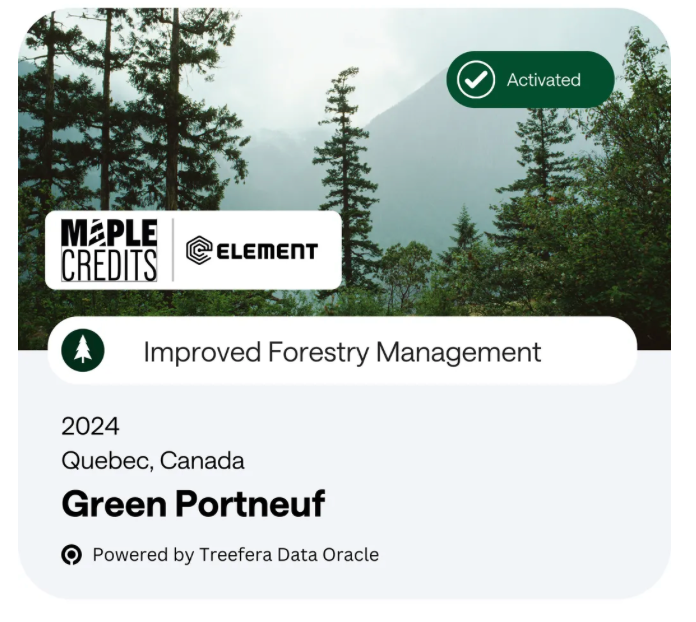
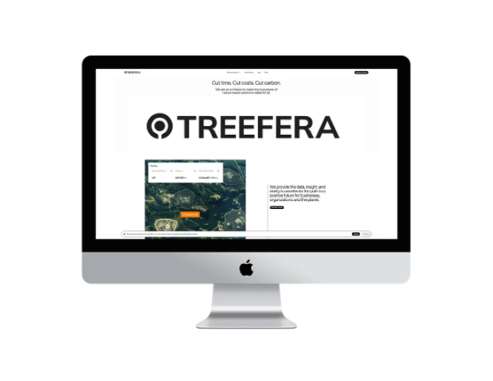

Element United x Treefera Launch Offset™: 43,832 Blockchain-Verified Carbon Credits Sell Out
Inaugural carbon credit release from Québec forest management project demonstrates strong market demand for traceable climate solutions
FOR IMMEDIATE RELEASE
Salt Lake City, Utah – November 2025
Element United today announced that Offset™, its blockchain-verified carbon credit marketplace developed in partnership with Treefera, has sold out its inaugural release of 43,832 carbon credits.
Maple Credits represent verified carbon sequestration from the Green Portneuf Improved Forest Management Project in Quebec, Canada—a 5,111-hectare initiative transforming industrial private forest areas into sustainably managed protected forests through Logged to Protected Forests (LtPF) and Reduced Impact Logging (RIL) practices.
Each credit was tracked from forest to ledger through Treefera's AI-powered verification platform, ensuring complete traceability and authenticity. The project, certified under the VM0034 Canadian Forest Carbon Offset Methodology v2.0, represented 43,832 tonnes of CO2e avoided emissions for the 2024 calendar year.
"Our partnership with Treefera proves what's possible when data transparency meets environmental accountability," said Scott Lomu, President of Element United. "Offset™ isn't just a marketplace—it's climate infrastructure built on verified impact."
"Carbon markets fail when trust fails," said Caroline Grey, Co-Founder of Treefera. "By bringing verifiable, real-time data to every credit, we're proving that transparency isn't optional—it's foundational to climate action that works."
"Our partnership with Element United shows how first-mile transparency can transform carbon markets from speculative to verifiable," said Jonathan Horn, Co-Founder of Treefera. "Climate solutions scale when data becomes infrastructure."
Next Availability: Additional carbon credit releases will be announced in January 2026.
For buyers: Visit ElementUnited.earth for updates on upcoming releases.
For carbon project developers: Contact Element United to list your verified credits on the Offset™ marketplace.
About Treefera
Treefera is an AI-enabled data platform that provides verifiable first-mile supply chain visibility—synthesizing satellite, sensor, and regulatory data into a single source of truth. The platform addresses the critical blind spot where over 60% of supply chain risks occur, delivering transparency from origin to end user.
About Element United
Element United provides blockchain-based verification systems spanning natural resource management, mining operations, and climate solutions. Through platforms like STRIA™, CORE™, and Offset™, Element United creates transparent, verifiable records that bridge industries—from ethical extraction to carbon sequestration, from mine to market to climate action.
Every element tells a story. Element United built the system that maps them all—making trust infrastructure.
Media Contact
Element United
Press Relations
press@elementunited.com